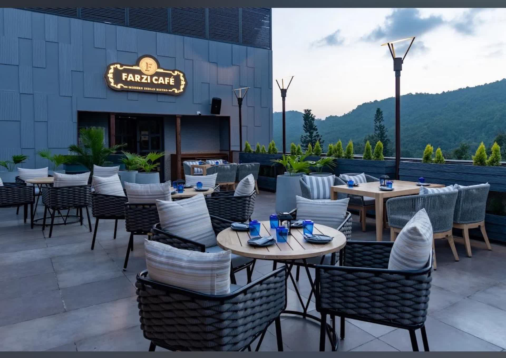

Press Kit
Everything you need to write about Farzi Café Dehradun — brand facts, founder and chef bios, awards, high-resolution photography, and direct contacts. Updated June 2026.
At a glance
- RestaurantFarzi Café Dehradun — modern Indian bistro & rooftop bar
- Address222, Dhakpatti, Rajpur Road, Dehradun, Uttarakhand 248009
- Opened2022 (Dehradun location) · Brand founded 2014, Cyber Hub Gurgaon
- Rating4.5 / 5 across 4,000+ Google reviews
- Cost for two~₹ 2,000 without alcohol · ₹ 3,500–4,000 with cocktails
- Capacity120 seated · 200 standing · 6 private cabanas (8 each)
- HoursDaily 12 PM – 11:30 PM (same all 7 days)
- Concept byMassive Restaurants Pvt Ltd
Press contact
Media & press enquiries
WhatsApp: +91 76177 71124
Phone: +91 76177 71124
Press visits & complimentary tastings arranged on 48-hour notice.
Founder bio
Zorawar Kalra — Founder & Managing Director, Massive Restaurants
Wikipedia: en.wikipedia.org/wiki/Zorawar_Kalra
Indian hospitality entrepreneur and one of the country's most decorated restaurateurs. Founded the original Farzi Café at Cyber Hub, Gurgaon in 2014 and grew the modern-Indian-bistro concept to twelve cities and two continents over the following decade. Son of the legendary Indian chef Jiggs Kalra, often called "the Czar of Indian cuisine". Co-founder of Massive Restaurants Pvt Ltd, the group also behind Made in Punjab, Pa Pa Ya and Dragonfly Experience. Brought the Dehradun rooftop to life in 2022 — Farzi's first hill-town location, set above 222, Dhakpatti, on Rajpur Road.
Chef bio
Chef Aman Bisht — Head Chef, Farzi Café Dehradun
Twelve-strong kitchen led by Chef Aman Bisht, formerly of Indian Accent and Bukhara. A Uttarakhand native, Aman moved home from Delhi in 2022 to open the Dehradun kitchen. His signatures — Galouti on a Stone, Dal Chawal Arancini, Awadhi Lamb Dum Biryani, Lal Maas Risotto — define the modern-Indian playbook the brand is known for.
Bar bio
Anjali Rawat — Bar Manager
Leads the bar programme. Built around Indian ingredients — saffron, curry leaf, jaggery, tamarind, mountain pine. Most-ordered cocktails: Saffron Sour, Curry Leaf Gimlet, Mussoorie Hill Highball.
Awards & recognition
- Condé Nast Traveller — Top 50 Restaurants in India · 2021, 2022, 2023, 2024
- EazyDiner — Best Modern Indian Cuisine · 2018, 2019, 2022, 2024
- Times Food Awards — Best Innovative Restaurant · 2020, 2023
- World Culinary Awards — India's Best Restaurant Brand · 2023
Brand description (short)
50 words:
Farzi Café Dehradun is a modern Indian bistro and rooftop bar on Rajpur Road. Familiar Indian dishes — dal chawal, butter chicken, biryani — reimagined through Western technique, smoke and theatre. Six private cabanas, an onyx-lit bar, panoramic Mussoorie hill views.
150 words:
Farzi Café Dehradun opened in 2022 as the Himalayan outpost of India's most-awarded modern Indian bistro brand. The original Farzi Café was founded by hospitality entrepreneur Zorawar Kalra at Cyber Hub, Gurgaon in 2014; the brand now operates across twelve cities and two continents. The Dehradun location sits above 222, Dhakpatti on Rajpur Road — a rooftop with an open-air terrace, six curtained private cabanas under brass canopies, an onyx-lit bar and a covered indoor bistro with floor-to-ceiling glass walls. The kitchen, led by Chef Aman Bisht (formerly Indian Accent, Bukhara), reimagines familiar Indian classics through Western technique, smoke and theatre. The bar runs an Indian-ingredient-forward cocktail programme. Recognised by Condé Nast Traveller's Top 50, EazyDiner, Times Food Awards and the World Culinary Awards. Open daily 12 PM – 11:30 PM.
High-resolution photography
For commercial or editorial use. Credit: Farzi Café Dehradun. Direct downloads — right-click to save, or contact us for batched assets.


{kind=link}



 Gold wordmark logo · 624×306 PNG
Gold wordmark logo · 624×306 PNG
Verified social channels
- Instagram: @farzicafedehradun
- Facebook: facebook.com/farzicafedehradun
- Zomato: Farzi Café Rooftop Dining & Bar
Last updated: 13 June 2026